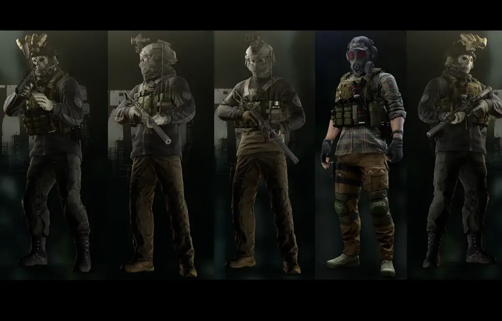

WTT- Artem
- Downloads
- 296,706
- Favourites
- 142
- Mod lists
- 268
“From Tarkov’s cultist ranks to a legend of trade and weapons. He’s a dark maestro, deals in secrets, with connections that can save or doom. An enigmatic figure crafting deadly instruments, where all has a price.”
Our operator’s story begins with his meeting of Artem, featuring fully functional quests (with more to come) and Custom Models. These quests delve into Tarkov lore, primarily focusing on his connection with Dennis, Scav bosses, etc. The main objective is to encourage the Operator to hunt and achieve more often during the night to earn the loyalty of our trader, “Artem.” as he offers 4 Levels to unlock.
“Artem’s reputation as a master of the art of bartering is well-established, making him widely acknowledged for his unwavering commitment to delivering the utmost in efficiency, profitability, and reliability in every transaction.”
Special Notes
I’d like to give a huge shoutout to GrooveyPenguinX, Tron, SSH, Virtual for their help
Installation -
**1.Install WTT - CommonLib **
2.Install Artem
3.Simply drag and drop the contents of the folder to your SPT Folder
ONCE AGAIN - IF YOU WANT QUESTS TO WORK INSTALL
First of all I’d like to thank you for Downloading Artem
to DM me privately with all kinds of questions (Support, Feedback and Recommendations)
Add me on discord: crackbonespt
If you feel like supporting me and my work.
You can do so by tipping me in my Ko-Fi
What is Welcome To Tarkov?
Welcome To Tarkov (WTT) is a mod for SPT AKI that has been in development for over a year. What started as a small passion project has grown in size to incorporate 15+ core members as well as contributions from other well-known mod authors and friends of WTT alike.
How does Welcome To Tarkov change the game?
As a mod, WTT overhauls SPT AKI, touching on almost every vanilla game system, as well as adding completely new systems to the game and its core mechanics. Inspired by open-world hardcore survival projects like STALKER: Anomaly and STALKER: GAMMA, WTT takes SPT’s artificial multiplayer MMO difficulty adders and replaces them with a challenging world economy, loot scarcity rebalancing, a lore friendly quest overhaul, and a map-traveling system built from rewritten portions of the Traveler mod allowing seamless travel between maps. Aside from its changes to the game’s core properties, WTT also adds to the world’s variety of traders, NPC’s, characters, items, and quests:
Over 1,000 custom bundles adding new weapons, attachments, wearables, containers, food, medical, and barter items. New bosses with their own custom gear that will be properly incorporated into WTT’s quest lines. New, meaningful traders with their own lore-friendly quests and narrative elements to help the player progress through the story-line of WTT. New playable characters and outfits that will add to the player’s customization abilities. New quest types incorporating brand new map extraction points, putting the player’s knowledge and familiarization of SPT’s maps to the test. Welcome To Tarkov stands as one of the largest mods created for SPT AKI thus far.
When does Welcome To Tarkov release?
Thursday.
Which Thursday?
TBD
Want to follow our progress?
You can follow the project through it’s development in our discord here:
Version
3.0.1
FIXED HOW THE ZIP WAS PACKAGED
- Updated target for the kill condition for “Expanding Wardrobe” quest to match the locales for the kill objective.
- Adding missing locales for a few quests that were missing “SuccessMessage” and other locale fixes and changes. Thanks Bushtail for doing this!
If any other issues are found please report them on the Artem GitHub repo so I can keep better track of them as I don’t always check the comments for this mod.
Dependencies
Version
3.0.0
Artem 3.0.0 for SPT 4.0!
Changes: Complete rewrite in C#
Bug Fixes: Fixed kills not counting for the following quests - “False Prophet - Part 1”, “Fetch It” and “Rags to Riches” Updated Locales for the quest “The Keycard Holder” to prevent some confusion on the objective
I want to show Crackbone much deserved love for making this mod and entrusting me to update his mod and bring it SPT 4.0!
Please report any issues to may encounter! Enjoy!
Dependencies
Version
2.1.2
ARTEM 2.1.2
UPDATE TO 3.11
S/O WTT
- +Fixed every clothing that got corrupted due to the major update to 3.11
- +thanks groovey for existing.
- +Updated to 3.11
i’d appreciate if u guys report any bugs u might find ❤️
ENJOY!!
Version
1.8.0
ARTEM 1.8
MAJOR UPDATE
THIS UPDATE WILL ONLY WORK ON 3.9
Make sure to Install - Trader Service Fix To be able to buy clothes
- Clothing -
-
+Added New Pants - “Fjällräven Barents Pro Trousers (Alpine)”
-
+Added New Pants - “Fjällräven Barents Pro Trousers (Multicam)”
-
+Added New Top - “Troubleshooter (Tattooed)”
-
+Added New Top - “Softshell Alpine”
-
+Added a New Item - “Tactical Bump Helmet (Alpine)”
-
+Added a New Item - “Zryachiy’s balaclava (Green)”
-
+Added a New Item - “Zryachiy’s balaclava (White)”
-
+Added a New Item - “DevTac Ronin ballistic helmet (Black)”
-
+Added a New Item - “DevTac Ronin ballistic helmet (Alpine)”
-
+Added a New Item - “Cold Fear Balaclava(Cultist + Skull)”
-
+Added a New Item - “Cold Fear Balaclava(Alpine)”
-
+Added a New Item - “Crye Precision CPC plate carrier (Multicam)”
-
+Added a New Item - “Crye Precision CPC plate carrier (Alpine)”
-
+Added a New Item - “Crye Precision CPC plate carrier (Black Multicam)”
-
+Added a New Item - “BlackRock Chest Rig (Alpine)”
-
+Added a New Item - “BlackRock Chest Rig (Black Multicam)”
-
+Added a New Item - “BlackRock Chest Rig (Multicam)”
- General Fixes -
- +ARTT_3 is now named PROPERLY (this is for you REYSON!)
- +Updated code frame to support ONLY 3.9
- +New clothing code frame (Thanks to Mighty_Condor)
- +Most likely fixed an issue with VCQL where u couldn’t re-plant an item upon registering a visited location
- +New loot distribution code (Thanks to SSH + Mighty_Condor)
- +Limited MOST of the items to a buy limit count.
- +Adjusted prices of items in the shop
nuked from forge, try source code url
Version
1.6.0
Hi, Artem 1.6 Is finally here!
With New quests, New Equipment and more balance!
Before reading changelogs
MAKE SURE TO UNINSTALL ALL FOLDERS THAT RELATE TO ARTEM.
DELETE OLD ITEMS IN-GAME(Clothing are exempt from this)
-Quests-
- +Added New Quest - “Audio Interference”
- +Added New Quest - “Gathering Information - Part 1”
- +Added New Quest - “Gathering Information - Part 2”
- +HEAVILY adjusted Quest rewards. (More balanced)
- +The Quest “Spooky Season” Now requires you to wear Artems “Skull Mask” (LL1)
- +Certain Items are now locked behind Quests. Fetch them!
-Items-
- +Added a New Vest - “MOPC Plate Carrier”
- +Added a New Vest - “Sentry Plate Carrier”
- +Added a New Helmet - “Ops-Core FAST Carbon High Cut Helmet(Typography+Reflective)”
- +Added a New Helmet - “DLP Tactical Extreme Helmet”
- +Added a New Helmet - “ACH High Cut Tactical Helmet”
- +Added a New Night Vision Goggles - “GPNVG-18 (White)”
- +Added a New Night Vision Goggles - “GPNVG-18 (Black)”
- +Added a New Night Vision Goggles - “GPNVG-18 (OD)”
- +Revamped an Existing Item - “Skull Mask” (Looks MUCH better now..)
- +Added a New Top - “G3 Combat Shirt (Multicamo)”
- +Added a New Top - “G3 Combat Shirt (Ranger Green
-Additional Changes-
- +“Modernized Item Crate” is now Barter Only
- +“Abandoned Medical Box” is now LL2+ (Locked behind “Grab n’ Tag”
- +Documents Case Barter is now alot more balanced
- +Changed Quantity and Prices of items
- +All “OP” Considered ammo is now locked behind quests to make it feel more “ rewarding. “
- +Supports Version 3.8.1
- +The prices that Artem will buy item from you is now changed per Loyalty level with him
- +LL2 - now requires you to have 0.25 standing with Artem and Player level 20
- +LL3 - now requires you to have 0.65 standing with Artem and Player level 34
- +LL4 - n ow requires you to have 1.20 standing with Artem and Player level 42
- +“5.56x45mm M855” is Locked behind “Grab n’ Tag” (LL1)
- +“7.62x39mm PS” is Locked behind “Uncovered Businesses” (LL1)
- +“12/70 flechette” is Locked behind “Spooky Season” (LL3)
- +“.300 Blackout BCP FMJ“ is Locked behind “Wanderer” (LL2)
- +“7.62x39mm BP” is Locked behind “Fetch It” (LL4)
- +“300 Blackout AP” is Locked behind “Fetch it” (LL4)
- +“12.7x55mm PS12” is Locked behind “Communication is Key” (LL4)
- +“7.62x51mm M61” is Locked behind “Rags to Riches” (LL4)
- +“5.45x39mm PPBS(Igolnik)” is Locked behind “Puppets” (LL4)
- +“5.56x45mm M995” is Locked behind “Abandoned Enterance” (LL4)
- +“Terragroups Labs access keycard” is Locked behind “The Keycard Holder” (LL4)
- +“7.62x51MM M62 Tracer” is locked behind “Gathering Information - Part 2” (LL4)
Version
1.0.9
- Update now supports 3.8
- Vests have been temporarily removed
Version
1.0.8
Version 1.0.8 is out
- +Updated to 3.7.5
- +Added Ghost mask (With 2 Variations - Red/Black)
- +Added an Ops-Core Low Cut Helmet(Roze)
- +Added an Ops-Core High Cut Helmet(SC Tan color)
- +Added a Tactical Bump Helmet (Grey)
- +Added a KOMBAT Viking Molle Plate Carrier
- +Added a CONDOR MOPC Plate Carrier
- +Added an Abandoned Medical Box (1944)
- +Added an Item Crate
- +Added Quest “Puppets”
- +Added Quest “Secret Formula”
- +Added Quest “The Keycard Holder”
- +Adjusted prices and quantity of items
Please continue to inform me of any bugs or errors you may encounter!
I appreciate each and every feedback/comment you guys share.
Version
1.0.5
- Added a new Ops-Core Fast Helmet
- Made it possible to mount Night Vision Goggles on existing helmets.
- Updated to 3.7.1
- Adjusted the price of both Nikto Mask and Ghost Mask
